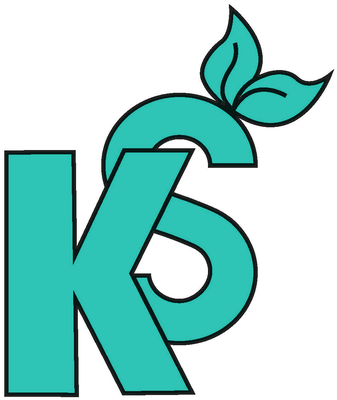

Anaerobic Digestion Pathways
Create A Microgrid
←
Discover
About
What is anaerobic digestion?
Funding Information
Our Data
References
Farms and Facilities
Help
Farms & Facilities
Beef Cattle (1,843)
Dairy Cattle (297)
Swine (439)
Turkeys (115)
Chickens (142)
Biodiesel Plants (8)
Ethanol Plants (42)
Wastewater Treatment (1,065)
Utilities (186)
Power Plants (217)
Landfill Sites (84)
Anaerobic Digesters (87)
Food Waste (275)
Loading data...